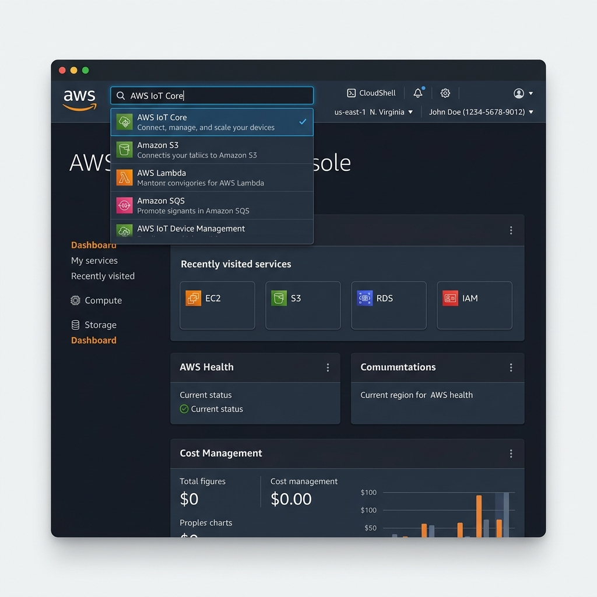
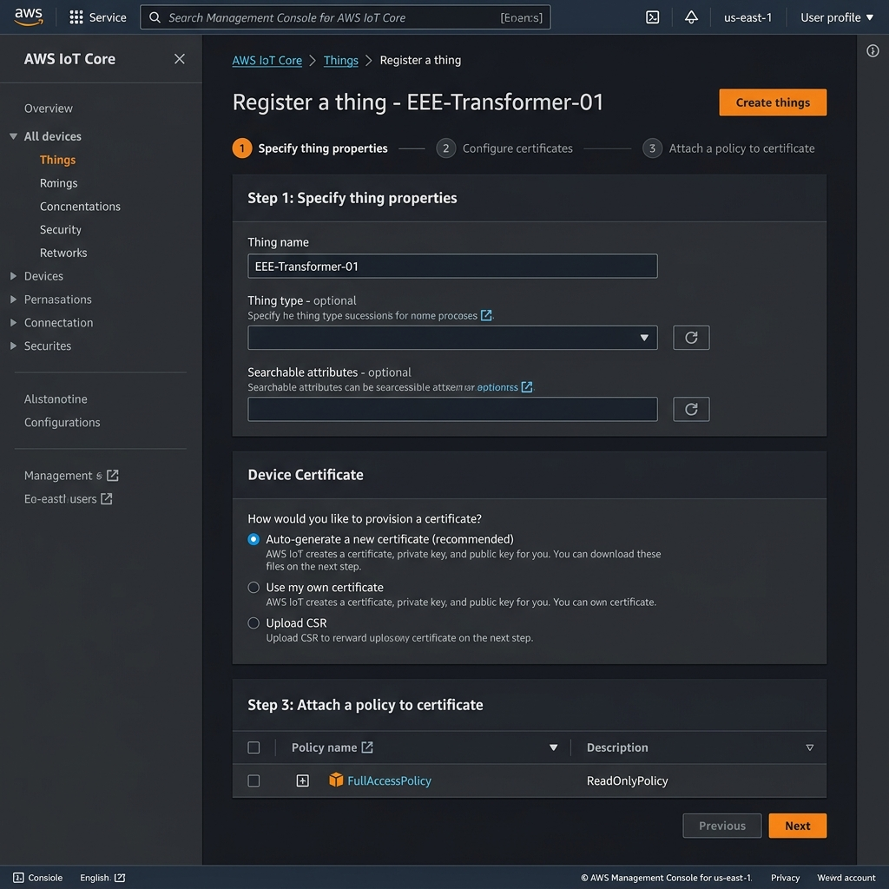
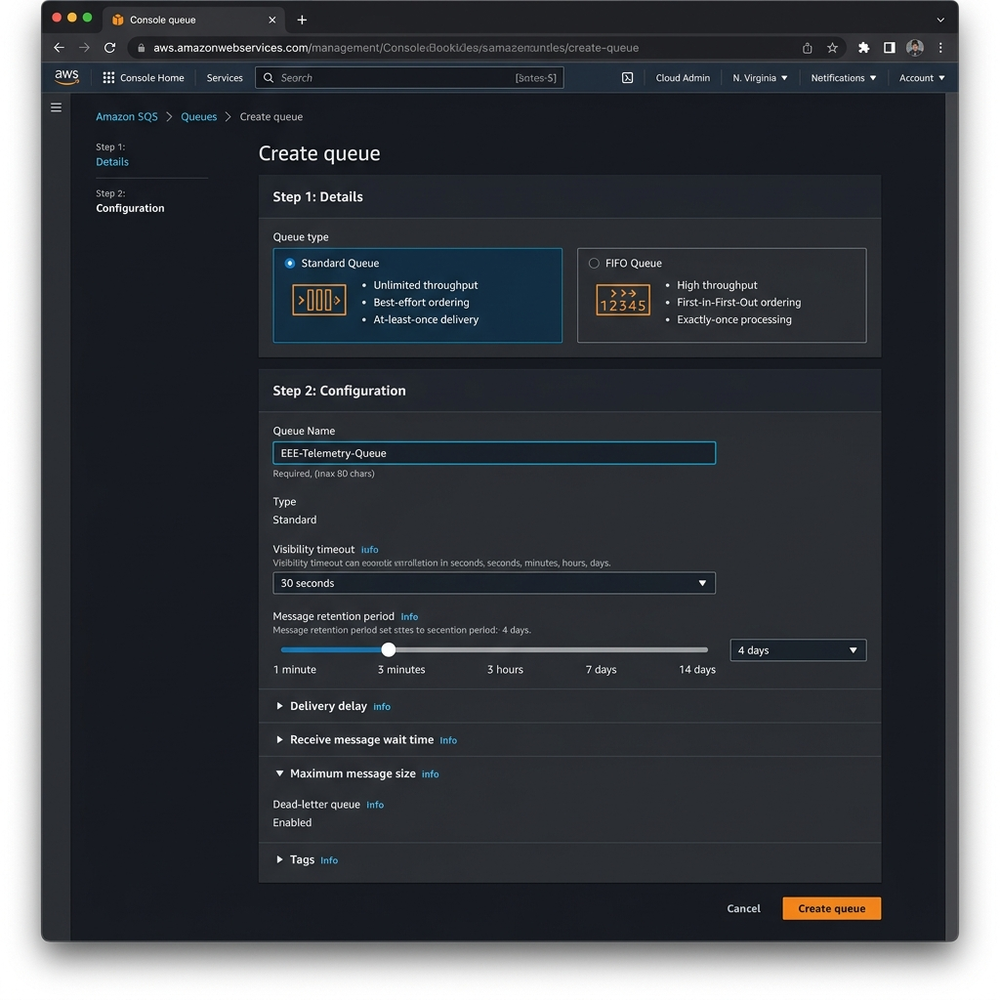
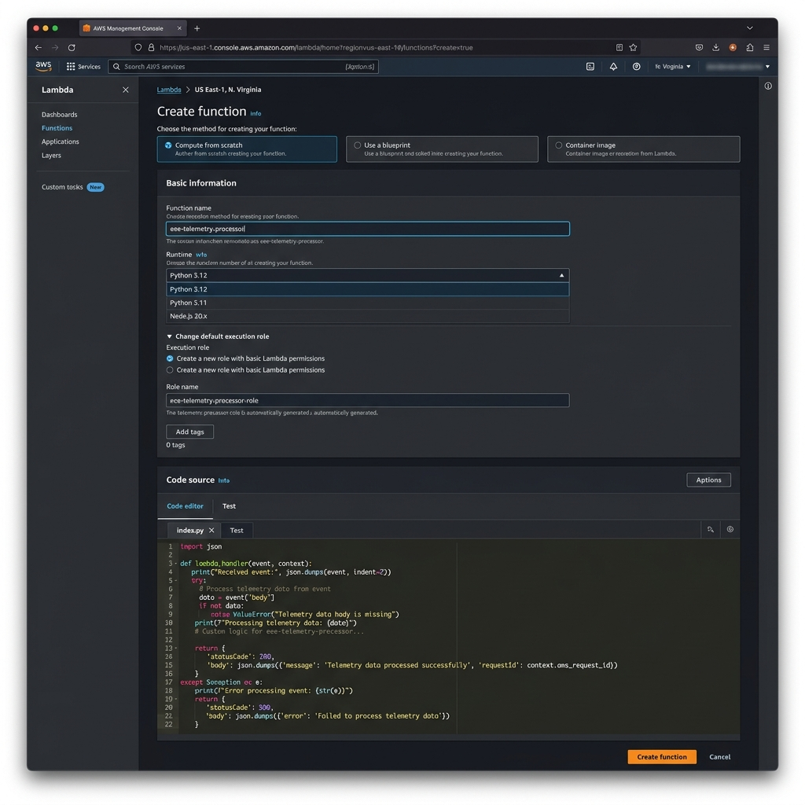
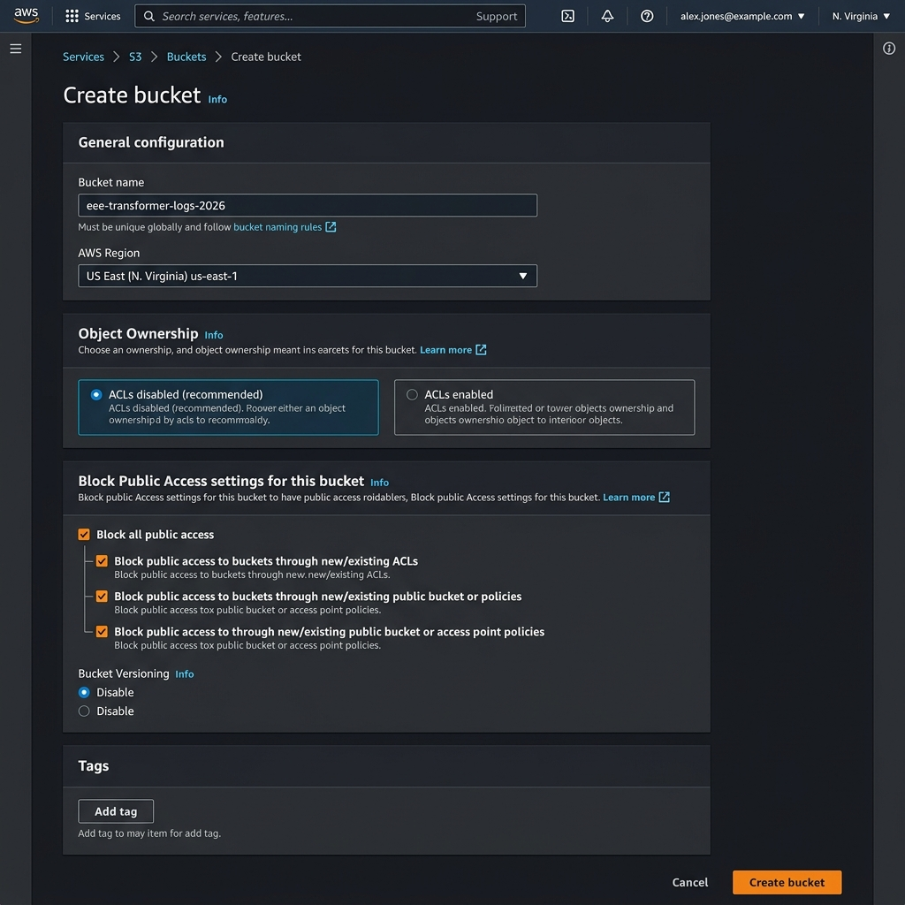
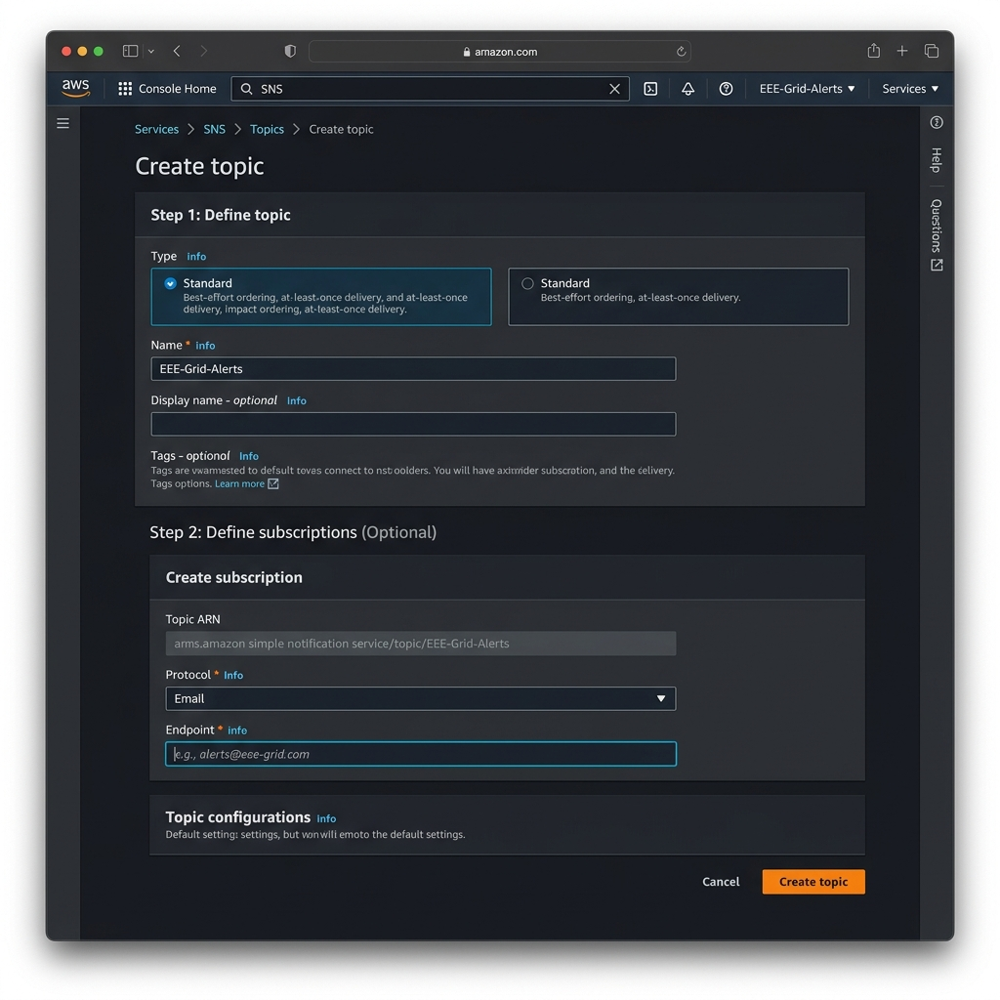
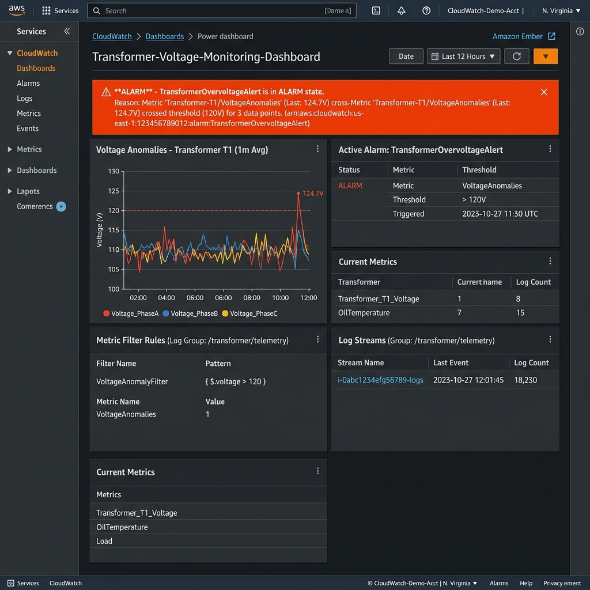
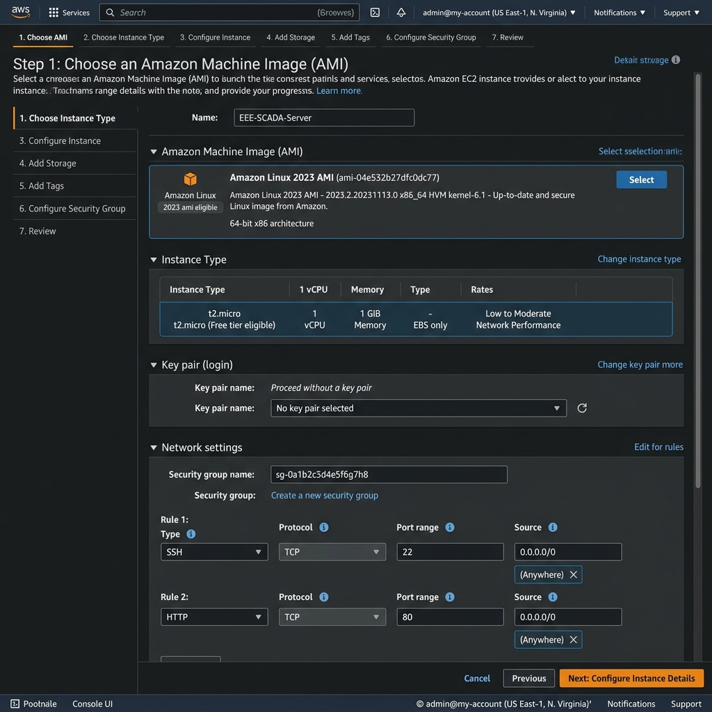
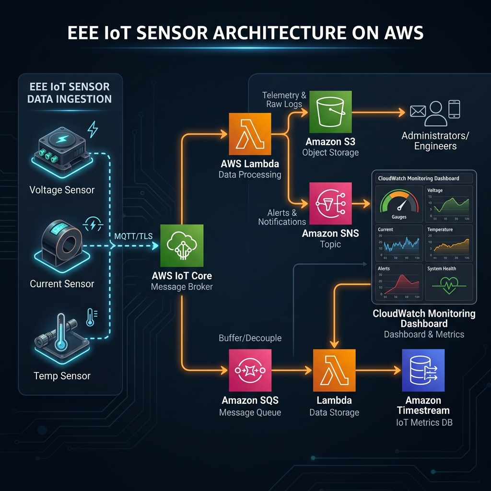

Cloud Fundamentals
Before connecting an electrical device to AWS, understand what the cloud actually provides and how an electrical engineer should think about it.
What is Cloud Computing & Why Use It?
💡 What is this service? (In Plain English)
Cloud computing means using computing resources—such as servers, storage databases, network switches, and analytics—over the internet on-demand instead of buying and maintaining physical server hardware yourself. For an electrical engineer, think of AWS as an infinite, virtualized electronic laboratory.
🎯 Why Use It? (Key Benefits)
- Zero Physical Maintenance: No need to build server rooms, buy UPS backups, or manage cooling systems.
- Elastic Scalability: Instantly expand compute & storage capacity as your grid or device fleet grows.
- Pay-As-You-Go: Pay strictly for the resources your engineering experiment or application consumes.
🏭 Traditional vs Cloud Solution
A smart power utility operating 10,000 smart energy meters across a city. Instead of building an on-premise datacenter, all meters stream telemetry directly to AWS cloud services for real-time load analysis.
🔑 Key Concepts You Need To Know:
By the end of this module, you should be able to:
- Explain cloud computing in simple engineering terms.
- Understand the basic AWS service model.
- Identify compute, storage, monitoring and IoT services.
- Explain why cloud systems are useful for EEE applications.
- Navigate the AWS Management Console.
- Understand AWS Regions and basic cost awareness.
What is Cloud Computing?
Cloud computing means using computing resources such as servers, storage, databases, networking and monitoring through the internet instead of purchasing and maintaining every physical computing resource yourself.
For an electrical engineer, imagine a laboratory where you can request a server, storage system, monitoring dashboard or message-processing system whenever your experiment needs it.
Imagine a company has 500 smart energy meters. Every meter sends voltage, current, power factor and energy readings every few seconds.
Instead of building a physical server room just to receive and store those readings, the system can send the telemetry to cloud services.
Traditional approach
- Buy physical server.
- Install operating system.
- Configure networking.
- Maintain storage.
- Monitor hardware.
- Scale when devices increase.
- Create cloud resources.
- Connect devices.
- Send telemetry.
- Store data.
- Process events.
- Monitor the system.
Think of AWS as an Electronic Workbench
Do not try to memorize hundreds of AWS services. Start by asking:
Connect
How does my sensor communicate with the cloud?
AWS IoT CoreProcess
Where should telemetry calculations happen?
AWS LambdaStore
Where should reports and data files be stored?
Amazon S3Queue
What happens when messages arrive faster than processing?
Amazon SQSAlert
How do we notify an engineer?
Amazon SNSMonitor
How do we observe system health?
CloudWatchEnter & Navigate the AWS Management Console
This is your starting point for the hands-on workshop. Learn how to open any AWS service in seconds, set your AWS region, and navigate the cloud environment like a seasoned engineer.

- Have access to your AWS account login credentials.
- Use a laptop/desktop with a modern browser (Chrome, Firefox, Edge, Safari).
- Keep your AWS password, credentials, and access keys strictly private.
- Select and maintain one AWS Region consistently throughout the workshop.
Open the AWS Console Log-In Page
Open your web browser and navigate to the official AWS Management Console entrance.
- Click Sign In to the Console in the upper right corner.
- Select your account type (IAM user or AWS IAM Identity Center as specified by your workshop instructor).
- Enter your 12-digit AWS Account ID or Account Alias.
- Enter your Username and Password, then click Sign In.
Set Your Workshop AWS Region
AWS services exist inside geographical data centers called Regions. To ensure all your IoT sensors, queues, and functions can communicate, you must work in the exact same Region.
- Click the Region name located to the left of your account username in the top right header.
- Select US East (N. Virginia)
us-east-1or Asia Pacific (Mumbai)ap-south-1as instructed. - Verify the Region code in your browser URL contains your chosen region code.
us-east-1, but your Lambda function was created in us-west-2, the system will not receive the data!
Master the AWS Service Search Bar
AWS has over 200 services. The fastest way to open any service is using the global search bar.
- Click on the search box at the top of the AWS Console header (or press keyboard shortcut
Alt + S). - Type the exact service name (e.g.
IoT Core,SQS,Lambda,S3). - Click on the service name under the Services section in the results menu.
- Click the ⭐️ star icon next to the service name to pin it to your navigation bar for fast access during the workshop!
AWS IoT Core
💰 Cost & Resource Awareness for Engineers
Cloud resources are provisioned on-demand. AWS provides a generous Free Tier for workshop services (like IoT Core, Lambda, SQS, S3). Always delete or stop resources after your project lab to avoid unexpected charges.
Which group contains the core functions we need in a cloud-based EEE system?
Think Like an Engineer
You are designing a transformer monitoring system. Answer these mentally before moving forward:
- Where would you store five years of historical telemetry?
- Where could you automatically calculate voltage × current?
- How would you notify an engineer if temperature exceeds a threshold?
- What happens if 10,000 devices send messages simultaneously?
AWS × EEE Applications
Cloud computing becomes useful when it solves a real engineering problem. This module connects AWS services with electrical and electronics applications.
Why Cloud Matters for Electrical & Electronics Engineers
💡 What is this service? (In Plain English)
Modern electrical and electronics engineering is shifting from isolated physical hardware (transformers, motors, microcontrollers) to cloud-connected intelligent systems. AWS bridges the gap between physical sensor measurements and automated cloud decisions.
🎯 Why Use It? (Key Benefits)
- Remote Asset Monitoring: Track high-voltage transformers, solar PV farms, and EV chargers from anywhere.
- Predictive Maintenance: Analyze vibration and temperature trends to detect equipment fault before failure.
- Automated Control Loops: Trigger emergency grid load shedding or alert dispatches automatically in milliseconds.
🏭 Traditional vs Cloud Solution
High-Voltage Transformer Oil Temperature Monitoring: Thermal sensors attached to a power transformer stream readings to AWS. If oil temperature spikes above 85°C, the cloud system automatically alerts duty engineers and schedules maintenance.
🔑 Key Concepts You Need To Know:
From Physical Signals to Cloud Decisions
Electrical systems already generate enormous amounts of information. Sensors measure electrical, thermal, mechanical and environmental parameters.
AWS provides cloud services that can receive, process, store and monitor this information.
Smart Energy
Monitor electricity consumption and power quality across buildings or industrial sites.
Example sensors: Current transformer, voltage sensor, energy meterIndustrial Automation
Collect machine telemetry and identify abnormal operating conditions.
Example sensors: Temperature, vibration, currentEV & Battery Systems
Monitor battery temperature, voltage, current and state-related information.
Example sensors: Cell voltage, temperature, currentRenewable Energy
Monitor solar or wind generation and equipment performance.
Example sensors: Voltage, current, irradiance, temperatureSmart Buildings
Monitor lighting, energy consumption, temperature and equipment.
Example sensors: Occupancy, temperature, energy meterPredictive Maintenance
Detect abnormal patterns before equipment failure.
Example sensors: Vibration, temperature, motor currentAsk These Three Questions
What is the problem?
Example: Transformer temperature is not being monitored continuously.
What data is required?
Example: Temperature every 10 seconds.
What action is required?
Example: Alert the maintenance engineer when temperature crosses the threshold.
Which is the best example of cloud-assisted EEE?
AWS IoT Core + MQTT
Connect an engineering device to AWS IoT Core, understand MQTT and observe telemetry inside the AWS IoT MQTT test client.
Understand MQTT Before Using It
MQTT is a lightweight publish/subscribe messaging protocol. Instead of one device directly calling another device, devices publish messages to topics.
↓
eee/transformer/01/telemetry
Create an AWS IoT Thing
A Thing is the AWS IoT representation of a physical device or logical device.

Open the AWS IoT Core Service Dashboard
AWS IoT Core is the managed cloud service that allows connected devices (smart meters, transformers, microcontrollers) to easily and securely interact with cloud applications.
- In the top search bar, enter
AWS IoT Core. - Click AWS IoT Core under Services.
- Look at the left navigation panel. Expand the menu if collapsed.
Navigate to 'Things' Registry & Click 'Create things'
A Thing is a digital representation of your physical device (e.g. smart transformer, solar inverter, ESP32) inside the AWS cloud registry.
- In the left sidebar, click All devices to expand sub-menu options.
- Click Things.
- Click the orange Create things button on the right side of the page.
Configure Single Thing Parameters
- Select the radio button Create single thing and click Next.
- In the Thing name input field, enter:
EEE-Transformer-01
- Leave Unnamed shadow (classic) unchecked for now.
- Scroll down and click Next.
Generate Device X.509 Certificate
AWS IoT Core uses mutual TLS (mTLS) authentication. Devices require an X.509 certificate to connect.
- Select Auto-generate a new certificate (recommended).
- Click Next to proceed to policy attachment.
- When prompted after creation, click Download for:
• Device certificate (.pem.crt)
• Private key (.pem.key)
• Amazon Root CA 1 certificate
Create & Attach AWS IoT Security Policy
Without an attached Policy, your device cannot publish or subscribe to any MQTT topic.
- Click Create policy (opens in a new tab) or select
EEE_IoT_Policyif previously created. - In Policy Name, enter
EEE-Allow-All-Policy. - In Policy Effect select Allow.
- In Policy Action enter
iot:*(or specificallyiot:Connect,iot:Publish,iot:Subscribe,iot:Receive). - In Policy Resource ARN enter
*for workshop testing. - Click Create, return to the Thing creation tab, select your policy, and click Create thing.
Successfully created thing: EEE-Transformer-01.
Test MQTT Messages in the Console
Test real-time messaging before connecting physical microcontrollers like ESP32 or Raspberry Pi.
- In the left panel under Test, click MQTT test client.
- Select the tab Subscribe to a topic.
- In Topic filter, enter
eee/transformer/01/telemetryand click Subscribe. - Now click the tab Publish to a topic, enter
eee/transformer/01/telemetry, paste sample JSON payload below, and click Publish:
{"voltage": 230.5, "current": 12.4, "power": 2.85, "status": "NORMAL"}
Download certificates
When AWS displays the download page, save the required certificate and key files securely.
✅ Expected Result
You should now have an AWS IoT Thing representing:
EEE-Transformer-01
The next task is to test MQTT communication.
Publish Telemetry Using MQTT Test Client
Open MQTT test client
In AWS IoT Core, open:
Subscribe to a topic
Subscribe to:
eee/transformer/01/telemetry
Publish a telemetry message
Use this example payload:
{
"deviceId": "EEE-Transformer-01",
"voltage": 230,
"current": 8.4,
"temperature": 62.5,
"powerFactor": 0.94,
"timestamp": "2026-09-04T10:30:00Z"
}Observe the message
Because you subscribed to the same topic, the published message should appear in the MQTT test client.
IoT Rules: Where Does the Message Go?
Receiving an MQTT message is only the beginning. AWS IoT Rules can evaluate MQTT messages and route them to other AWS services.
Buffer messages.
Process telemetry.
Store objects/data.
Send notifications.
MQTT is best described as:
Amazon SQS
Learn how queues protect cloud applications when messages arrive faster than the processing system can handle them.
Why do we need a queue?
Imagine 5,000 sensors suddenly publish telemetry. Your processing function may not be able to process everything simultaneously.
Create & Configure an Amazon SQS Telemetry Queue
Learn how to open Amazon SQS, configure queue parameters, send test telemetry payloads, and poll messages directly from the AWS Console.

EEE-Telemetry-Queue.
Open the Amazon SQS Console
- In the top console search bar, type
SQSorSimple Queue Service. - Click Simple Queue Service in the search results.
- Make sure your AWS Region matches your workshop setting (e.g., N. Virginia or Mumbai).
Click 'Create queue' & Select Queue Type
- Click the orange Create queue button.
- Under Type, select Standard radio button.
• Standard: Nearly unlimited throughput, best for general sensor logging where exact sub-second order isn't critical.
• FIFO: First-In-First-Out, ensures exact sequential ordering, ideal for power grid circuit breaker event sequences!
Set Queue Name & Timing Parameters
- In the Name field, enter:
EEE-Telemetry-Queue
- Keep Visibility timeout at
30 seconds(prevents double-processing by multiple worker instances). - Keep Message retention period at
4 days(data persists even if processing server crashes). - Keep Maximum message size at
256 KB. - Scroll to the bottom and click Create queue.
Successfully created queue: EEE-Telemetry-Queue.
Send & Receive Test Messages in SQS Console
- On your queue details page, click Send and receive messages in the top right.
- Under Message body, paste a sample telemetry payload:
{"device_id": "EEE-Transformer-01", "temp_celsius": 68.2, "status": "WARN"}
- Click Send message.
- Scroll down to Receive messages section and click Poll for messages.
- Click on the message ID to expand and inspect the raw payload stored in the cloud buffer!
Producer → Queue → Consumer
Producer
Sends a message.
IoT CoreQueue
Holds the message.
SQSConsumer
Processes the message.
LambdaWhat is the main architectural benefit of SQS?
AWS Lambda
Run engineering calculations automatically when telemetry arrives, without managing a traditional server.
EEE Calculation Example
Suppose a sensor reports:
A Lambda function can calculate:
Create a Lambda Function

Lambda code editor
AWS provides a built-in console editor for supported interpreted runtimes.
Create & Deploy an AWS Lambda Telemetry Processor
Learn how to open AWS Lambda, configure execution roles, write Python calculations for telemetry (Voltage × Current = Power), deploy code, and test execution.

eee-telemetry-processor with Python 3.12 runtime. Use the built-in code editor tab to write serverless logic.
Open the AWS Lambda Console
- In the top search bar, type
Lambda. - Select Lambda under Services.
- In the left panel or landing dashboard, click Functions.
- Click the orange Create function button in the top right.
Configure Function Name, Runtime & Execution Role
- Keep Author from scratch selected.
- In Function name, enter:
eee-telemetry-processor
- In Runtime, select Python 3.12 (or Python 3.11).
- In Architecture, keep
x86_64. - Under Permissions, select Create a new role with basic Lambda permissions (automatically creates IAM role for CloudWatch logs).
- Click Create function at the bottom.
Successfully created function eee-telemetry-processor.
Write EEE Telemetry Code in the Built-In Editor
Scroll down to the Code source section. Double-click lambda_function.py, clear existing code, and paste the Python code below:
import json
def lambda_handler(event, context):
print("Received telemetry payload:", json.dumps(event))
# Extract electrical metrics
voltage = float(event.get('voltage', 0))
current = float(event.get('current', 0))
# EEE Calculation: Power P = V * I
power_watts = voltage * current
# Overpower protection logic (> 2500W threshold)
status = "OVERLOAD_ALERT" if power_watts > 2500 else "NORMAL"
response = {
'statusCode': 200,
'voltage': voltage,
'current': current,
'power_watts': round(power_watts, 2),
'status': status
}
print("Calculated Response:", response)
return responseDeploy & Test Your Lambda Function
- Click the orange Deploy button above the code editor to compile and save your code into AWS.
- Click Test button (or select Configure test event).
- In Event name, enter
OverloadTestEvent. - In Event JSON payload area, paste:
{"voltage": 240, "current": 12.5}
- Click Save, then click Test.
- Expand the Execution result: succeeded panel.
OVERLOAD_ALERT!
✅ Expected Result
Lambda receives the JSON event, performs the engineering calculation and returns the result.
Which statement best describes Lambda?
Amazon S3
Store engineering files, reports, raw telemetry archives, exported datasets and other objects in cloud storage.
What is Amazon S3 & Why Use It?
💡 What is this service? (In Plain English)
Amazon S3 (Simple Storage Service) is an object storage service designed to store and retrieve any amount of digital data—such as sensor log files, CSV telemetry archives, equipment manuals, and waveform images—from anywhere on the internet.
🎯 Why Use It? (Key Benefits)
- 11 Nines Durability (99.999999999%): Objects are replicated across multiple isolated data centers, protecting data against physical drive failures.
- Unlimited Capacity: Store files ranging from 1 KB JSON payloads to petabytes of historical grid data with no storage ceiling.
- Cost-Effective Lifecycle Tiering: Automatically move older telemetry archives to S3 Glacier for pennies per gigabyte.
- Enterprise Data Security: Block Public Access by default, server-side encryption (SSE-S3 AES-256), and fine-grained access policies.
🏭 Traditional vs Cloud Solution
Substation Oscillography Archiving: High-speed 100Hz fault recorders at an electrical substation upload daily `.JSON` log files to an S3 bucket named `eee-substation-logs-2026` for long-term power quality auditing.
🔑 Key Concepts You Need To Know:
Bucket → Object → Key
Container for objects.
Stored file/data.
Object's name/path.
EEE Example
bucket:
eee-transformer-data
object:
2026/09/04/transformer-01.jsonThe object could contain telemetry collected from an electrical device.
Create & Configure an Amazon S3 Cloud Storage Bucket
Learn how to open Amazon S3, set globally unique bucket names, configure security & encryption options, and upload telemetry log files.

Open the Amazon S3 Service Dashboard
- In the top search bar, type
S3. - Click S3 under Services.
- In the left panel, click Buckets.
- Click the orange Create bucket button on the right.
Specify Globally Unique Bucket Name & Region
- In AWS Region, ensure it matches your workshop region (e.g.
us-east-1). - In Bucket name, enter a unique lower-case string (e.g.,
eee-transformer-logs-2026-yourname):
eee-transformer-logs-2026-YOURNAME
Configure Security & Encryption Options
- Ensure Block all public access checkbox remains CHECKED.
- Keep Bucket Versioning disabled (or enable if tracking historical telemetry revisions).
- Keep Server-side encryption as Amazon S3 managed keys (SSE-S3).
- Scroll to the bottom and click Create bucket.
Successfully created bucket "eee-transformer-logs-2026-YOURNAME".
Upload Sensor Telemetry Log Files
- Click your bucket name from the list to open its details page.
- Under the Objects tab, click the orange Upload button.
- Click Add files and upload your sample
transformer-01.jsonlog file (or drag and drop it into the window). - Click Upload at the bottom right.
Upload succeeded. Your telemetry object is now securely archived in AWS Cloud Storage!
🔐 Storage Security Checklist
Amazon S3 is primarily:
Amazon SNS
Learn how cloud systems broadcast notifications when an engineering event requires human attention.
Publisher → Topic → Subscribers
What is Amazon SNS & Why Use It?
💡 What is this service? (In Plain English)
Amazon SNS (Simple Notification Service) is a publish/subscribe (Pub/Sub) messaging service that delivers urgent alert notifications—via Email, SMS text message, mobile push, or HTTP endpoints—immediately when an engineering anomaly or alarm occurs.
🎯 Why Use It? (Key Benefits)
- Instant Push Delivery: Delivers critical fault notifications directly to duty engineers' mobile phones in milliseconds.
- Fan-Out Pattern: A single message published to an SNS Topic can simultaneously send an Email to an engineer, an SMS to a technician, and trigger a Lambda function for automated shutdown.
- Decoupled Alerting: Producers don't need to know who receives alerts—SNS handles subscriber dispatch automatically.
🏭 Traditional vs Cloud Solution
High-Voltage Transformer Thermal Overload Alert: When Lambda detects oil temperature > 90°C, it publishes an alert payload to the `eee-transformer-alerts` SNS topic. SNS immediately sends an SMS to the power station engineer.
🔑 Key Concepts You Need To Know:
Create & Configure an Amazon SNS Notification Topic
Learn how to open Amazon SNS, create alert broadcast topics, add email subscribers, confirm subscriptions, and publish instant emergency notification messages.

EEE-Grid-Alerts, then add an Email subscription to deliver fault alerts to engineers.
Open the Amazon SNS Dashboard
- In the top console search bar, type
SNS. - Select Simple Notification Service.
- In the left panel, click Topics.
- Click the orange Create topic button.
Specify Topic Type & Name
- Under Type, select Standard radio button (allows multiple protocols: Email, SMS, HTTP webhook, Lambda, SQS).
- In the Name input field, enter:
EEE-Grid-Alerts
- Keep Display name as
EEE-Alerts(shown in SMS header). - Scroll down and click Create topic.
arn:aws:sns:us-east-1:ACCOUNT_ID:EEE-Grid-Alerts.
Create Email Subscription
- Click the orange Create subscription button.
- Ensure Topic ARN matches
EEE-Grid-Alerts. - Under Protocol, select Email.
- In the Endpoint field, enter your valid email address:
yourname@example.com
- Click Create subscription.
PendingConfirmation.
Confirm Email Subscription & Publish Test Alert
- Open your personal email inbox, find the message from AWS Notifications, and click Confirm subscription.
- Return to the SNS Console and refresh. Status changes to Confirmed!
- On your topic page, click Publish message button in the top right.
- In Subject enter
HIGH VOLTAGE ALERT - SUBSTATION 01. - In Message body enter
WARNING: Phase A voltage exceeded 250V safety limit! Automatic shutdown initiated. - Click Publish message.
Think: “Wait and process.”
- Queue
- Buffer
- Consumer processes message
Think: “Broadcast and notify.”
- Topic
- Fan-out
- Subscribers receive notification
Which service is designed around topics and subscribers?
Amazon CloudWatch
Monitoring is essential when cloud systems become part of engineering infrastructure.
Metrics + Logs + Alarms
Metrics
Numerical measurements of system behaviour.
What is Amazon CloudWatch & Why Use It?
💡 What is this service? (In Plain English)
Amazon CloudWatch is a monitoring and observability service that acts as the central control room and digital oscilloscope for your cloud infrastructure and connected EEE devices, tracking real-time metrics, log files, and threshold alarms.
🎯 Why Use It? (Key Benefits)
- Real-Time Visual Dashboards: Create custom graphs for telemetry message counts, voltage stability, CPU load, and execution delays.
- Proactive Threshold Alarms: Set automated alarms (e.g. alert if message error rate > 5% for 2 minutes) to trigger SNS alerts.
- Centralized Log Aggregation: Collect, search, and troubleshoot log streams from microcontrollers, Lambda functions, and servers in one window.
🏭 Traditional vs Cloud Solution
Solar PV Plant Output Monitoring: CloudWatch tracks total active power (kW) generated by a 1MW solar array. If output drops below 100kW during peak noon hours, a CloudWatch Alarm fires and sends an alert via SNS.
🔑 Key Concepts You Need To Know:
Logs
Records generated by applications and services.
Alarms
Trigger when defined conditions are met.
CloudWatch does not automatically know the raw voltage of a physical sensor just because the sensor exists. The telemetry or application must publish appropriate metrics/logs for monitoring.
Inspect CloudWatch Logs & Build Overvoltage Alarms
Learn how to open AWS CloudWatch, locate Lambda execution logs, inspect telemetry metrics, and build automated CloudWatch Alarms for overvoltage protection.

Open the AWS CloudWatch Console
- In the top search bar, type
CloudWatch. - Select CloudWatch under Services.
- Explore the left sidebar: Alarms, Logs, Metrics, Dashboards.
Inspect Lambda Log Groups & Streams
- In the left panel under Logs, click Log groups.
- Find and click
/aws/lambda/eee-telemetry-processor. - Click on the latest Log stream.
- Inspect the print statements (e.g.
Received telemetry payload,Calculated Response, execution duration, and memory used).
Create a Metric Filter for Voltage Overloads
- On your Log group page, click the Metric filters tab.
- Click Create metric filter.
- In Filter pattern, enter
"OVERLOAD_ALERT". - Click Next, enter Metric Name
VoltageOverloadCount, NamespaceEEE/SubstationMetrics, Value1. - Click Create metric filter.
Build a CloudWatch Alarm & Attach SNS Action
- In the left panel under Alarms, click All alarms and choose Create alarm.
- Click Select metric ➔ Choose
EEE/SubstationMetrics➔ SelectVoltageOverloadCount. - Under Threshold conditions, set Whenever
VoltageOverloadCountis Greater/Equal (≥) 1 for 1 data point. - Click Next. Under Alarm state trigger, select In alarm.
- Under Send a notification to..., choose Select an existing SNS topic and pick
EEE-Grid-Alerts! - Enter Alarm name
Substation-Voltage-Critical-Alarmand click Create alarm.
🔎 If Something Fails
Check whether the function actually executed and whether its execution role permits log delivery.
Confirm that the relevant service/application is publishing the metric you are looking for.
Check the metric, threshold, period and alarm state.
Which combination represents common CloudWatch monitoring concepts?
Amazon EC2
Learn when an electrical engineering application needs a virtual server with operating-system-level control.
What is EC2?
Amazon EC2 provides virtual compute instances that can run operating systems and applications.
What is Amazon EC2 & Why Use It?
💡 What is this service? (In Plain English)
Amazon EC2 (Elastic Compute Cloud) provides resizable virtual machines (servers) in the cloud. It gives you full administrative root control over operating systems (Linux/Windows), CPU cores, RAM, and storage to run continuous heavy engineering workloads.
🎯 Why Use It? (Key Benefits)
- Full Administrative Root Access: Install specialized engineering software like SCADA platforms, MATLAB runtime, OpenDSS, or C++ power flow solvers.
- Flexible Compute Specifications: Choose hardware from 1 vCPU / 1GB RAM up to 128 vCPUs / 512GB RAM with high-performance GPUs.
- Continuous 24/7 Execution: Ideal for long-running control loops, web server dashboards, and continuous background calculation tasks that exceed Lambda's 15-minute limit.
🏭 Traditional vs Cloud Solution
Power System Load Flow Simulator: An EC2 instance running a Linux OS executes a continuous Python OpenDSS simulation script calculating voltage drops and feeder losses across a 5,000-bus distribution network 24/7.
🔑 Key Concepts You Need To Know:
Important EC2 vocabulary
Machine image used to launch an instance.
Defines compute characteristics.
Used for instance access depending on OS/setup.
Controls network traffic to the instance.
Block storage associated with EC2.
Launch & Connect to an Amazon EC2 Virtual SCADA Server
Learn how to open Amazon EC2, select Linux Machine Images (AMI), choose free-tier instance types, configure Security Groups (ports 22 & 80), and connect via web browser SSH.

Open the Amazon EC2 Console Dashboard
- In the top search bar, type
EC2. - Select EC2 under Services.
- On the EC2 Dashboard, click Instances in the left sidebar.
- Click the orange Launch instances button.
Set Instance Name & Select AMI
- In Name, enter:
EEE-SCADA-Server
- Under Application and OS Images (Amazon Machine Image), select Amazon Linux.
- Choose Amazon Linux 2023 AMI (marked Free tier eligible).
- Under Instance type, select
t2.micro(ort3.micro, 1 vCPU, 1 GiB Memory).
Configure Key Pair & Security Group Firewall Rules
- Under Key pair (login), choose Create new key pair, enter
eee-scada-key, format.pem, and download the key file. - Under Network settings, click Edit:
• Check Allow SSH traffic from Anywhere (0.0.0.0/0) (Port 22)
• Check Allow HTTP traffic from the internet (Port 80 for web SCADA dashboard) - Click Launch instance in the bottom right summary card.
Successfully initiated launch of instance (i-0123456789abcdef0).
Connect via EC2 Instance Connect in Browser
- Click View all instances and wait until Instance state shows Running (green).
- Select your instance checkbox and click Connect in the top action bar.
- Select the EC2 Instance Connect tab, keep default username
ec2-user, and click Connect.
[ec2-user@ip-... ~]$! You are now directly controlling an AWS cloud server!
🧹 Cleanup
If the instance is no longer needed, follow your workshop cleanup procedure.
Remember: Stop and Terminate are not the same operation.
- Event-driven
- Serverless
- Good for short processing tasks
- AWS manages infrastructure
- Virtual server
- OS-level control
- Good for custom/long-running software
- You manage more of the server environment
Which AWS service provides virtual servers?
Complete System Integration
Now combine the individual AWS services into one engineering architecture.
End-to-End Cloud Architecture for EEE Systems
💡 What is this service? (In Plain English)
System Integration connects individual AWS building blocks into a seamless, fault-tolerant end-to-end data pipeline—routing physical sensor readings from hardware through cloud buffers, processing functions, storage vaults, and alert systems to live monitoring dashboards.
🎯 Why Use It? (Key Benefits)
- End-to-End Resilience: If any single downstream database or notification channel experiences maintenance, SQS buffers data without loss.
- Elastic Scalability: Handles 1 sensor packet per minute or 100,000 telemetry messages per second seamlessly.
- Complete Automation: Eliminates manual data entry and provides automated real-time engineering insights.
🏭 Traditional vs Cloud Solution
Complete Smart Grid Telemetry Architecture: ESP32 reads Voltage/Current -> AWS IoT Core receives MQTT payload -> SQS buffers message -> Lambda calculates Power Factor -> S3 archives raw JSON -> SNS alerts engineer if Power Factor < 0.85 -> CloudWatch displays live grid dashboard.
🔑 Key Concepts You Need To Know:

What Happens When a Sensor Sends Data?
Sensor measures
The physical system measures voltage, current, temperature or another parameter.
Device publishes
The device publishes telemetry using MQTT.
IoT Core receives
AWS IoT Core handles device communication.
Rule routes
An IoT Rule determines where the message goes.
SQS buffers
Messages can wait in a queue.
Lambda processes
Engineering calculations or validation happen.
S3 stores
Data files can be retained for later analysis.
CloudWatch monitors
Logs and metrics help engineers observe the system.
SNS alerts
Important events can be sent to subscribers.
Why Decoupling Matters
Imagine Lambda temporarily becomes busy. If IoT devices were directly dependent on Lambda, the whole system could become tightly coupled.
With SQS in the middle, messages can wait while the consumer processes them.
Sensor → Processor
Tight dependencySensor → SQS → Processor
Decoupled architecture🚨 Failure Scenario
Suppose 3,000 smart meters suddenly send readings during a system restart.
Which flow best represents this workshop?
EEE Cloud Capstone
You are now the engineer. Choose an engineering problem, select sensors and build a cloud architecture using the AWS services learned in this workshop.
EEE Cloud Solutions Architecture Challenge
💡 What is this service? (In Plain English)
The Capstone Project puts everything into practice! Select a real-world electrical or electronics engineering challenge (Smart Grid, Solar PV Monitoring, EV Charging Infrastructure, or Substation Automation), architect the complete AWS cloud pipeline, and present your solution.
🎯 Why Use It? (Key Benefits)
- Practical Skills Validation: Build and configure real AWS cloud resources for a complete engineering scenario.
- Architecture Design Mastery: Demonstrate how to select the right compute, storage, queuing, and alerting services for specific physical constraints.
- Enterprise Preparation: Prepares electrical and electronics engineers for industry deployments in IoT, Smart Energy, and Cloud SCADA.
🏭 Traditional vs Cloud Solution
Designing an automated EV Fast-Charging Station monitoring system that tracks battery charging rates, detects thermal runaway risks, alerts grid operators via SNS, and logs billing telemetry to S3.
🔑 Key Concepts You Need To Know:
Your Challenge
Design a small AWS-powered solution for a real electrical/electronics problem.
You do not need to build every physical component. Your goal is to explain how the complete system would work.
Select an Engineering Problem
Choose the problem you want your cloud system to solve.
Select Sensors / Telemetry
Choose the data your system needs.
Choose Processing
Choose Storage
Choose Alerting
Build your solution
Select your engineering problem, sensors and AWS services above.
🎤 60-Second Pitch
Use this structure when presenting your solution:
“Our engineering problem is...”
“We collect...”
“We send the data to AWS using...”
“The data is processed using...”
“If an abnormal condition occurs...”
🏁 Final Knowledge Check
1. Which service connects devices to AWS?
2. Which service buffers messages?
3. Which service is event-driven serverless compute?
4. Which service is object storage?
AWS × EEE Workshop
From engineering measurements to cloud-powered solutions.
You now have the architecture vocabulary to start designing your own AWS × EEE system.